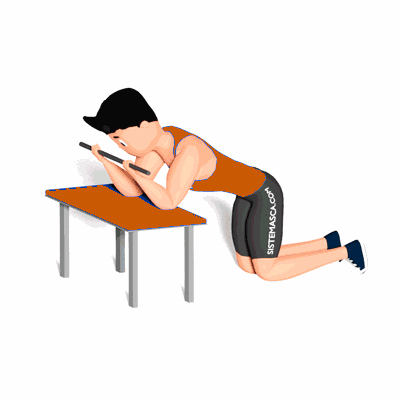

Mobilidade Torácica no Banco

O exercício tem como objetivo trabalhar a mobilidade torácica, preparando para realizar atividades físicas.
Ficha Técnica
Tipo: Mobilidade
Grupo Muscular: Peito
Aparelho: Nenhum
Músculos: Nenhum
Como realizar
- Com as duas mãos segure uma barra;
- Ajoelhe de frente ao banco e apoie os cotovelos sobre ele;
- Os cotovelos devem ficar na largura dos ombros, a parte interna do braço deve ficar bem próxima a orelha;
- Aos poucos jogue o quadril para trás, sem deixar os cotovelos abrirem;
- Ao mesmo tempo leve o antebraço para cima da cabeça;
- Mantenha essa posição por alguns segundos e depois retorne a posição inicial.
 RC STORE
RC STORE